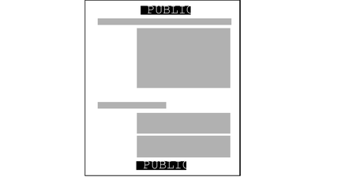

Labels on Body Pages
By default, each print job's label is printed at the top and
bottom of every body page.
Figure 4-1 shows the label PUBLIC printed at the top and bottom of a
print job's body page.
Figure 4-1 Label Automatically Printed on Body Pages

The Security Administrator role can change the defaults so that a higher label
is printed instead of the label of the print job. To print
a higher label, see Specifying Channels. To hide labels completely, see Reducing Printing Restrictions in Trusted Extensions (Task Map) in Solaris Trusted Extensions Administrator’s Procedures.